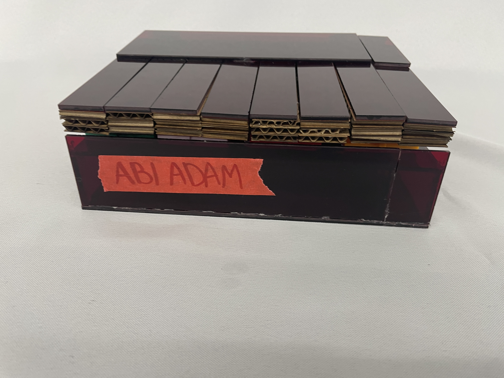
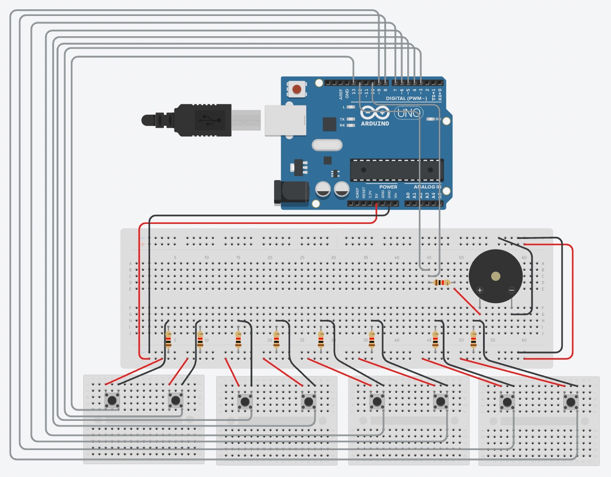

# Week 13: Final Project
## MiniPiano
## Demo Video:
<video width="800" height="450" controls>
<source src="3cb078ef-1742-474b-bee6-754f89c02325-0-c958e449-44c2-4f7b-924f-840e858fb6ac.mp4">
</video>
## Purpose:
I chose to make the MiniPiano because I believe that music should be more accessible and portable. Pianos and keyboards are so large and it is incredibly impracticle to move them around, and it can even be difficult to find somewhere to place them. The MiniPiano is small, portable, and fits easily wherever one wants to put it. It is perfect for practicing and just having fun with simple pieces of music.
Above all, the MiniPiano was created to enable more people to explore music in a convenient way before diving in.
It is also aesthetically pleasing and will look cool, doubling as a decorative piece.
## Mechanism:
To see the detailed process through which I created this process, go to [this page](file:///Users/Abi/Documents/GitHub/PHYS-S-12/13_Final_Project_Plans/index.html).
The MiniPiano is operated by eight keys, connected to the body of the piano. When pushed, each key triggers a button that sends a signal to the computer. Based on which button sent the signal, the computer tells the buzzer to play a specific note. By using a variety of different functions, the piano is capable of playing multiple notes at once and responding quickly to changes in the state of the buttons. The code is included in full below, and so are all the files used to manufacture the MiniPiano. There is also a CAD model of the body of the piano and circuit diagrams below.
## Images:
<img src="IMG_6336.JPG" alt="overhead piano" style="width:403.2px;height:301.5px;">
<img src="IMG_6337.JPG" alt="side view piano" style="width:401.7px;height:301.6px;">

<img src="IMG_6430.jpeg" alt="circuit view" style="width:402.5px;height:300.8px;">
## Code:
<pre><code class="language-arduino">
// Author: Abi Adam
class Button {
// Class Member Variables
// These are initialized at startup
int buttonPin; // the number of the pin
long frequency; // the frequency
int playTime; // the amount of time the buzzer will play after the button is pressed
// These maintain the current state
int buzzerState; // buzzerState used to set the buzzer
// Constructor - creates a Button and initializes the member variables and state
public:
Button(int pin, long freq, int time_){
buttonPin = pin;
pinMode(buttonPin, INPUT);
frequency = freq;
playTime = time_;
buzzerState = LOW;
}
///////////////////////////////////////////////////////////////////////////////////////////////////
void playNoise(int buttonPin, int buzzerPin, int frequency, int playTime){
int buttonState = 0;
buttonState = digitalRead(buttonPin); // read new state
if (buttonState == HIGH) {
Serial.println("The button is being pressed");
myTone(buzzerPin, frequency, playTime); // turn on
}
else
if (buttonState == LOW) {
Serial.println("The button is unpressed");
myTone(buzzerPin, 0, 5); // turn off
}
}
///////////////////////////////////////////////////////////////////////////////////////////////////
void myTone(int pin, int frequency, int duration){
int startTime = millis();
int period = 1000000/frequency;
while ((millis() - startTime) < duration){
digitalWrite(pin, HIGH);
delayMicroseconds(period/2);
digitalWrite(pin, LOW); //reversed high and low in this while-- change back if this causes problems
delayMicroseconds(period/2);
}
}
}; //end of Button class
///////////////////////////////////////////////////////////////////////////////////////////////////
void playChord(int chordN1, int chordN2){
while (digitalRead(chordN1) == HIGH && digitalRead(chordN2) == HIGH){
Serial.println("Playing note 1!");
Serial.println(chordN1);
if (chordN1 == 1){ analogWrite(10, 262); }
else if (chordN1 == 2){ analogWrite(10, 294); } //CHANGED FROM 3
else if (chordN1 == 3){ analogWrite(10, 330); }
else if (chordN1 == 4){ analogWrite(10, 349); }
else if (chordN1 == 5){ analogWrite(10, 392); }
else if (chordN2 == 6){ analogWrite(12, 440); }
else if (chordN1 == 6){ analogWrite(10, 493); }
else if (chordN1 == 8){ analogWrite(10, 523); }
Serial.println("Playing note 2!");
Serial.println(chordN2);
if (chordN2 == 1){ tone(12, 262); }
else if (chordN2 == 2){ tone(12, 294); } //CHANGED FROM 3
else if (chordN2 == 3){ tone(12, 330); }
else if (chordN2 == 4){ tone(12, 349); }
else if (chordN2 == 5){ tone(12, 392); }
else if (chordN2 == 6){ tone(12, 440); }
else if (chordN2 == 7){ tone(12, 493); }
else if (chordN2 == 8){ tone(12, 523); }
if (digitalRead(chordN1) == LOW) {
tone(10, 0, 5); // turn off
}
if (digitalRead(chordN2) == LOW) {
tone(12, 0, 5); // turn off
}
} // end of while
} // end of chord
///////////////////////////////////////////////////////////////////////////////////////////////////
int buzzerPin = 10;
int buzzerPin2 = 12;
int buttonState = 0;
Button button1(13, 262, 500);
Button button2(2, 294, 500); //CHANGED FROM 3
Button button3(4, 330, 500);
Button button4(5, 349, 500);
Button button5(6, 392, 500);
Button button6(7, 440, 500);
Button button7(8, 493, 500);
Button button8(9, 523, 500);
void setup() {
Serial.begin(9600); // initialize serial
pinMode(buzzerPin, OUTPUT); // set arduino pin to output mode
pinMode(buzzerPin2, OUTPUT);
}
void loop() {
button1.playNoise(13, 10, 262, 500);
button2.playNoise(2, 10, 294, 500); //CHANGED FROM 3
button3.playNoise(4, 10, 330, 500);
button4.playNoise(5, 10, 349, 500);
button5.playNoise(6, 10, 392, 500);
button6.playNoise(7, 10, 440, 500);
button7.playNoise(8, 10, 493, 500);
button8.playNoise(9, 10, 523, 500);
//Playing 2 Notes at Once:
int chordN1;
int chordN2;
int pushed [8]; //create an array to read each of the buttons
pushed[0] = digitalRead(13);
pushed[1] = digitalRead(2);
pushed[2] = digitalRead(4);
pushed[3] = digitalRead(5);
pushed[4] = digitalRead(6);
pushed[5] = digitalRead(7);
pushed[6] = digitalRead(8);
pushed[7] = digitalRead(9);
for (int i = 1; i<=9; i++){ //will go through and read the arrays values
int pushedState = digitalRead(pushed[i]); //will read read every value in the array, and store it in a variable i
for (int j = 1; j <=9; j++){
int compareState = digitalRead(pushed[j]); //will also read every value in the array, and store it in a new variable, j
if (pushedState == HIGH && compareState == HIGH && j != i){
Serial.println("Two buttons pressed");
//if there are 2 buttons pressed
chordN1 = i;
chordN2 = j;
Serial.println(i);
Serial.println(j);
playChord(chordN1, chordN2); }
} // end of for 2
}// end of for 1
}//end of void loop
</code></pre>
## Circuit Diagram:

## Files:
Laser Cutting File: </br>
[DXF File](https://a360.co/3PApYHY).
</br>
[DXF Addition File (to correct mistakes in the first cut)](https://a360.co/3oyetF5).
</br>
CAD MODEL OF CASING HERE
## Tutorials/Resources:
Playing Two Notes at Once: </br>
[Arduino Tutorial](https://arduino.stackexchange.com/questions/32926/multiple-tones-with-one-piezo-buzzer).